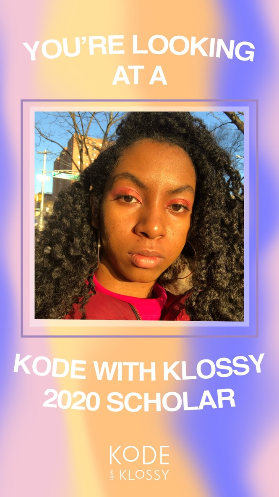
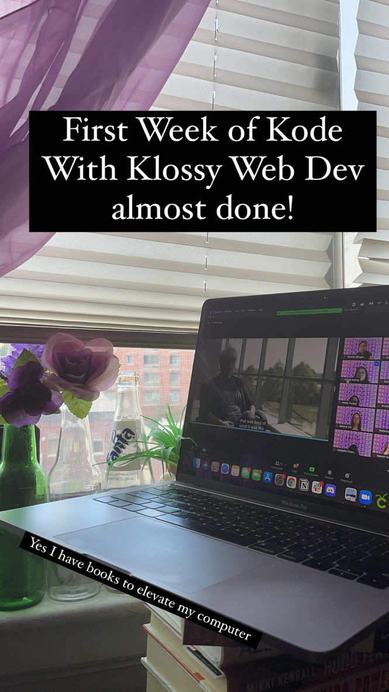

Summer 2020


I joined a virtual web development camp!
I joined a virtual web development camp!
I joined a virtual mobile development camp!
I was a community ambassador!
I was an IA for 3 camps!
I was a CODE-A-BRATION IA!
I am a Program Operations Intern with Kode With Klossy!